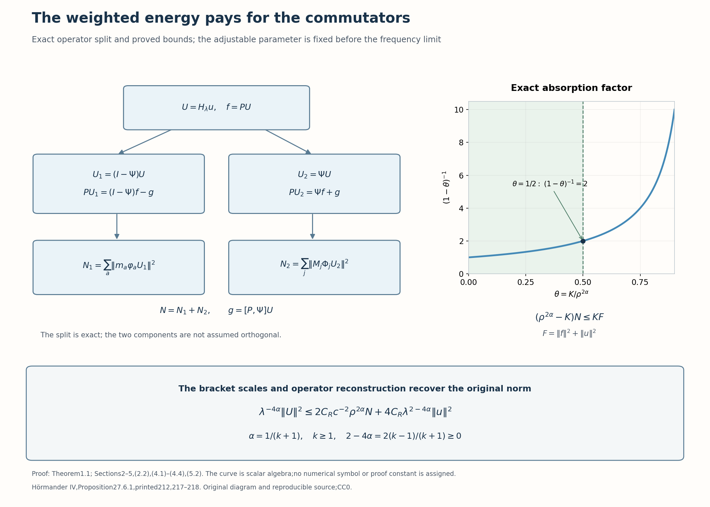

Assembling the general subelliptic estimate
The localized model inequalities have a large adjustable coefficient on their left sides. Partition commutators cost only a fixed multiple of the same localized energy. This lets us absorb their cost before using the lower bound for the center scales. The resulting gain concerns the original compact pseudodifferential localization, whose output need not have compact spatial or frequency support.
The exact partition, reconstruction and commutator provider is Recovering localized norms and controlling partition commutators, Theorem 1.1. Both complete local gains are Local gain in the scalar and affine cells, Theorem 1.1. The scale lower bound is An adaptive scale for repeated brackets, Lemma 2.1; the actual finite families are Covering by curved Hamiltonian neighborhoods, Theorem 1.1. We use the finite left-product and uniform Hilbert operator interfaces (B8b), (B26) in When a moving symbol scale controls an operator, with their declared lower foundations. The assembly and initial cutoff calculation are proved here. This gives the full sufficient estimate of Hörmander [H, Proposition 27.6.1].
1. The coefficient class, sign orientation and conclusion
Write \(t=x_1\), \(w=(x',\xi')\), and \(D=-i\partial\). Fix an integer \(k\geq1\), and put \(\alpha=1/(k+1)\). For \(0<\lambda<1\), let \(q=q_\lambda\) be real and smooth on \(\mathbb R\times\mathbb R^{2n-2}\), with global bounds
\[ |\partial_t^a\partial_w^\beta q(t,w)| \leq C_{a\beta}\lambda^{|\beta|-2}. \tag{1.1} \]The constants are uniform over the coefficient family. Time derivatives do not earn powers of \(\lambda\). In the source formula (27.6.1), the exponent \(|\alpha'+\beta'|-2\) counts transverse derivatives; the primes matter. Formula (1.1) is that coefficient class in the present notation.
In the full canonical coordinates \((t,x';\tau,\xi')\), use the bracket convention
\[ \{f,g\}=\partial_\tau f\,\partial_tg -\partial_tf\,\partial_\tau g +\sum_{j=2}^n (\partial_{\xi_j}f\,\partial_{x_j}g -\partial_{x_j}f\,\partial_{\xi_j}g). \tag{1.2} \]Set \(q_1=\tau,q_2=q(t,w)\), \(q_{(a)}=q_a\), and \(q_{(a,I)}=\{q_a,q_I\}\). The length \(|I|\) counts leaves. Form the brackets first, then evaluate them at \(\tau=0\). Assume on \(\mathcal O_\lambda=\{|t|<1,|w|<\lambda^{-1}\}\) that
\[ \lambda^{-2}\leq C' \sum_{1\leq |I|\leq k+1}|q_I(t,0,w)|. \tag{1.3} \]For every fixed \(w\) in this domain, also assume that there are no \(t_1<t_2\) in \((-1,1)\) with \(q(t_1,w)>0\) and \(q(t_2,w)<0\). Thus a negative-to-positive change is permitted; a positive-to-negative change is excluded. Zeros and an identically zero part of an individual time curve are permitted, subject to the separate bracket lower bound.
Let \(h\in C_c^\infty(\mathbb R^{2n-1})\), with \(\operatorname{supp}h\subset\{|t|\leq1/2,|w|\leq1/2\}\). Define transverse left quantization by
\[ \begin{gathered} s_\lambda(t,x',\xi')=h(t,\lambda x',\lambda\xi'), \qquad H_\lambda=\operatorname{Op}_L(s_\lambda),\\ P=D_t+i\operatorname{Op}_L(q). \end{gathered} \tag{1.4} \]Norms below are the full time-space \(L^2\) norms.
Theorem 1.1. There are \(C_*,\lambda_0>0\), depending only on \(n,k,h,C'\) and finitely many constants in (1.1), such that
\[ \lambda^{-2\alpha}\|H_\lambda u\| \leq C_*(\|Pu\|+\|u\|), \qquad u\in\mathcal S(\mathbb R^n),\quad 0<\lambda<\lambda_0. \tag{1.5} \]Increasing \(C_*\) to be at least \(\lambda_0^{-1}\) gives the source's equivalent single condition \(\lambda C_*<1\). The constant is uniform over all symbols with the declared common bounds. No sign condition outside \(\mathcal O_\lambda\) is required. The statement for \(n=1\) uses no transverse variables and will be included in the proof.
2. The weighted energies retain their adjustable parameter
Fix exponents \(0<\kappa_1<\kappa<\kappa_2<\alpha\). For an auxiliary \(\rho\geq1\), the scale is
\[ M_\rho(t,w)=\max_{1\leq|I|\leq k+1} \left(\frac{|q_I(t,0,w)|}{\rho}\right)^{1/|I|}. \tag{2.1} \]Choose \(\rho\) first and then make \(\lambda\) sufficiently small. The adaptive cover gives scalar cutoffs \(\varphi_a\), with constant center weights \(m_a\), and affine cutoffs \(\Phi_j\), with constant center weights \(M_j\). Their separating symbol is \(\Psi\). With transverse left quantization understood, put
\[ \begin{gathered} U=H_\lambda u,\qquad U_1=(I-\Psi)U,\qquad U_2=\Psi U,\\ N_1=\sum_a\|m_a\varphi_aU_1\|^2, \qquad N_2=\sum_j\|M_j\Phi_jU_2\|^2, \qquad N=N_1+N_2. \end{gathered} \tag{2.2} \]The identity \(U=U_1+U_2\) is exact. It does not require \(\Psi\) to be an orthogonal projection. The finite construction and the declared Schwartz-action calculus make every expression well defined for the stated \(u\). Parameters may affect Schwartz seminorms; only the \(L^2\) bounds used below need to be uniform.
At every selected center, the scale lemma gives
\[ m_a,M_j\geq c\rho^{-\alpha}\lambda^{-2\alpha}, \tag{2.3} \]with \(c>0\) independent of \(\rho,\lambda\), once \(\lambda^2\rho\leq1\). To see why the leaf count gives this exponent, let \(J_k\) be the finite number of words in (1.3). Some word has magnitude at least \(\lambda^{-2}/(C'J_k)\). With \(Z=\lambda^{-2}/\rho\geq1\) and its length \(\ell\leq k+1\), its root is at least \(cZ^{1/\ell}\geq cZ^\alpha\), for a fixed \(c\). The scalar center scale agrees with the full scale there by the case-I attainment theorem; the affine center uses the full scale itself. This proves (2.3) for both families.
We now list the exact already proved operator estimates used in the assembly. Write
\[ \begin{gathered} E=\|PU_1\|^2+\|PU_2\|^2,\\ T=\sum_a\|P\varphi_aU_1\|^2 +\sum_j\|P\Phi_jU_2\|^2, \qquad g=[P,\Psi]U. \end{gathered} \tag{2.4} \]The partition lesson's Theorem 1.1 and both local gains give fixed constants \(C_P,C_G,C_R,C_L\) with
\[ \begin{aligned} T&\leq C_P(E+N+\|u\|^2),\\ \|g\|^2&\leq C_G(N+\|u\|^2),\\ \|U_1\|^2&\leq C_R\sum_a\|\varphi_aU_1\|^2 +C_R\lambda^2\|u\|^2,\\ \|U_2\|^2&\leq C_R\sum_j\|\Phi_jU_2\|^2 +C_R\lambda^2\|u\|^2,\\ \rho^{2\alpha}N&\leq C_L(T+\|u\|^2). \end{aligned} \tag{2.5} \]The constants are independent of the number of pieces and of the sufficiently large \(\rho\); the permitted \(\lambda\) threshold can depend on that fixed \(\rho\). These are full operator estimates, including the finite composition remainders. In particular, the norm recoveries hold for \(H_\lambda u\) even when \(h\) touches the boundary of its allowed support. The reconstruction proof uses the vanishing jets at that boundary. We do not infer these recoveries from a pointwise partition of symbols.
3. The initial cutoff has a uniformly bounded commutator
The metric for the initial transverse cutoff is \(g_\lambda=\lambda^2(|dx'|^2+|d\xi'|^2)\); its Planck factor is \(\lambda^2\). Its structure constants are uniform. At each fixed time, (1.1) and the chain rule give
\[ q\in S(\lambda^{-2},g_\lambda),\qquad s_\lambda\in S(1,g_\lambda),\qquad D_ts_\lambda\in S(1,g_\lambda). \tag{3.1} \]The Hilbert bound (B26), with its left-quantization conversion, therefore gives \(\|H_\lambda\|\leq C_h\). The scalar zeroth products cancel in the transverse commutator. The first left-product contraction gives exactly
\[ [P,H_\lambda] =\operatorname{Op}_L(D_ts_\lambda+H_qs_\lambda)+R_\lambda, \qquad \|R_\lambda\|\leq C\lambda^2, \tag{3.2} \]where \(H_qs\) is the transverse part of \(\{q,s\}\). For the sign, the first term of \(q\#_Ls-s\#_Lq\) is \((1/i)\{q,s\}\); multiplying by the \(i\) in \(P\) leaves \(H_qs\). The time term is \([D_t,H_\lambda]=\operatorname{Op}_L(D_ts_\lambda)\), with \(D_t=-i\partial_t\).
Each first transverse derivative of \(q\) has amplitude \(\lambda^{-1}\), and each of \(s_\lambda\) has amplitude \(\lambda\). Their product, with all further derivatives measured in \(g_\lambda\), has amplitude one. The full order-two product remainder in (B8b) has amplitude \(\lambda^{-2}(\lambda^2)^2=\lambda^2\), including the remainder of both orders of composition. The uniform operator bound then proves the stated remainder norm. This is a finite product estimate; no infinite symbol expansion is used.
All bounds are uniform in time, so their squared fixed-time estimates integrate over time. Consequently
\[ f=PU=H_\lambda Pu+[P,H_\lambda]u, \qquad \|f\|\leq C_0(\|Pu\|+\|u\|). \tag{3.3} \]Only \(D_th\) was used in the time part of the cutoff commutator. No additional factor of \(\lambda\) for time differentiation was presumed. If \(n=1\), \(H_\lambda\) is multiplication by \(h(t)\), the transverse commutator is zero, and (3.3) follows from \([D_t,h]=D_th\) directly.
4. Absorb the partition costs before removing the weights
The separating operator and its complement have uniform norms, say \(B_2,B_1\), by the partition provider. Commuting \(P\) through the exact split gives
\[ PU_1=(I-\Psi)f-g, \qquad PU_2=\Psi f+g. \tag{4.1} \]The opposite signs follow from \([P,I-\Psi]=-[P,\Psi]\). We do not drop the cross terms by a claim of orthogonality. Instead \(\|a+b\|^2\leq2\|a\|^2+2\|b\|^2\), followed by (2.5), gives
\[ E\leq2(B_1^2+B_2^2)\|f\|^2+4\|g\|^2 \leq B(\|f\|^2+N+\|u\|^2), \tag{4.2} \]where \(B=\max\{2(B_1^2+B_2^2),4C_G,1\}\) is fixed. Set \(A=C_L(C_P+1)\). Combining the first and last lines of (2.5) yields \(\rho^{2\alpha}N\leq A(E+N+\|u\|^2)\). Substitution of (4.2), with \(F=\|f\|^2+\|u\|^2\) and \(K=A(B+1)\), proves
\[ (\rho^{2\alpha}-K)N\leq K F. \tag{4.3} \]All constants defining \(K\) are fixed before \(\rho\) is chosen. Let \(\rho_0\) be the threshold for the local gains, and choose once and for all
\[ \rho\geq\max\{1,\rho_0,(2K)^{1/(2\alpha)}\}. \qquad\text{Then}\qquad \rho^{2\alpha}N\leq2K F. \tag{4.4} \]Finally take \(\lambda\) below the finitely many thresholds for this fixed \(\rho\), the three fixed radius exponents, the covers and the finite operator expansions. The inequality \(\lambda^2\rho\leq1\) is among these thresholds. This selection order avoids a circular choice: making \(\lambda\) smaller does not change \(K\), and \(\rho\) is never allowed to drift with \(\lambda\) in a limit which required it to stay fixed.
5. Recover the original norm and its exact gain
Write \(Z_1=\sum_a\|\varphi_aU_1\|^2\) and \(Z_2=\sum_j\|\Phi_jU_2\|^2\). The lower bounds (2.3) apply to each constant center weight, hence
\[ Z_1+Z_2\leq c^{-2}\rho^{2\alpha}\lambda^{4\alpha}N. \tag{5.1} \]Since \(U=U_1+U_2\), both norm recoveries in (2.5) give
\[ \begin{aligned} \lambda^{-4\alpha}\|U\|^2 &\leq2C_Rc^{-2}\rho^{2\alpha}N +4C_R\lambda^{2-4\alpha}\|u\|^2\\ &\leq4C_Rc^{-2}K F+4C_R\|u\|^2. \end{aligned} \tag{5.2} \]In the second line we used (4.4) and \(2-4\alpha=2(k-1)/(k+1)\geq0\), with \(0<\lambda<1\). At \(k=1\), this exponent is exactly zero: the reconstruction error is bounded by the original data norm and need not tend to zero. For larger \(k\), it does tend to zero. It is never absorbed into the unknown localized norm.
Equation (3.3) bounds \(F\) by a fixed multiple of \((\|Pu\|+\|u\|)^2\). Taking the square root of (5.2) proves (1.5). The permitted choice of \(\rho\) is now a fixed number depending only on the declared data; it no longer appears as a variable in the theorem's constant. In dimension one there is no affine family: \(\Psi=0,U_2=0,N_2=0\). The scalar cover, gain and reconstruction give exactly the same argument. This completes the full theorem. ∎

Figure 1. The left panel shows the actual operators and energies in (2.2), (4.1), rather than a pointwise orthogonal partition. The right curve is the exact algebraic factor \((1-\theta)^{-1}\) for \(\theta=K/\rho^{2\alpha}\) in (4.3). Its marked threshold \(\theta=1/2\) is the choice (4.4); the curve is an algebraic illustration, with no numerical symbol or proof constant assigned. The lower formula is the proved norm conversion (5.2), retaining the reconstruction error and its nonnegative exponent. The bracket lower bound supplies each center weight; the operator reconstruction supplies the norm. Original diagram, CC0; reproducible Python source.
6. A signed finite-type model and the sharp scaling
Choose a real smooth compactly supported \(\chi\), equal to one on \([-1,1]\), and set
\[ q_\lambda(t,w)=\lambda^{-2}\chi(t)t^k. \tag{6.1} \]It is independent of \(w\). It satisfies every global bound (1.1): transverse derivatives of positive order vanish, and each time derivative is bounded by a fixed constant times \(\lambda^{-2}\). On \(|t|<1\), the word of length \(k+1\) giving \(\partial_t^kq\) is \(k!\lambda^{-2}\), so (1.3) holds with a fixed constant. Odd \(k\) gives a negative-to-positive crossing; even \(k\) gives a nonnegative coefficient. Both satisfy the sign orientation.
Take nonzero \(v\in C_c^\infty((-1,1))\) with \(\|v\|=1\), and, for \(n>1\), \(\phi\in\mathcal S(\mathbb R^{n-1})\) with \(\|\phi\|=1\). Put \(\mu=\lambda^{-2\alpha}\) and
\[ u_\lambda(t,x')=\mu^{1/2}v(\mu t)\phi(x'), \qquad \|u_\lambda\|=1, \qquad \|Pu_\lambda\|=\mu\|(D_s+is^k)v\|. \tag{6.2} \]For \(n=1\), omit \(\phi\). The formula is exact for sufficiently small \(\lambda\), since the time support lies where \(\chi=1\), and \(\lambda^{-2}\mu^{-k}=\mu\).
Choose an allowed cutoff of the separable form \(h(t,x',\xi')=h_t(t)h_x(x')h_\xi(\xi')\), with all three factors equal to one near zero. Take the transverse supports in balls of radius less than \(1/4\) so that the combined phase support has radius less than \(1/2\). Its exact left operator is \(h_t(t)h_x(\lambda x')h_\xi(\lambda D')\). For small \(\lambda\), \(h_t\) is one on the time support of \(u_\lambda\). Plancherel and dominated convergence give \(h_\xi(\lambda D')\phi\to\phi\) and \(h_x(\lambda x')\phi\to\phi\) in \(L^2\). Uniform boundedness of the multiplying factor then proves
\[ \|H_\lambda u_\lambda\|\longrightarrow1. \tag{6.3} \]If the left gain in (1.5) were replaced by \(\lambda^{-\beta}\) with \(\beta>2/(k+1)\), (6.2)–(6.3) would give \(\lambda^{-\beta}/2\leq C(\lambda^{-2\alpha}\|(D_s+is^k)v\|+1)\) for small \(\lambda\). Dividing by \(\lambda^{-2\alpha}\) contradicts \(\lambda^{2\alpha-\beta}\to\infty\). Thus the exponent is sharp for this full coefficient class.
7. Reversing the sign permits a concentrated approximate kernel
The derivative and bracket assumptions alone do not imply (1.5). To see this without changing their coefficient class, set \(q_\lambda=-\lambda^{-2}\chi(t)t\), with the same kind of \(\chi\) as above. It is positive before zero and negative afterwards. Its pure-time word of length two equals \(-\lambda^{-2}\) on \(|t|<1\), so it satisfies the bracket bound for every \(k\geq1\).
Choose a smooth \(\eta\), equal to one near zero and supported in a small interval where an allowed \(h_t\) equals one. Normalize
\[ u_\lambda(t,x')=c_\lambda\eta(t) e^{-t^2/(2\lambda^2)}\phi(x'), \qquad c_\lambda\asymp\lambda^{-1/2}, \qquad\|u_\lambda\|=1. \tag{7.1} \]The normalization follows by substituting \(t=\lambda s\) in the squared integral: it is asymptotic to \(\lambda\sqrt\pi\), before multiplication by \(c_\lambda^2\). The same transverse cutoff argument as (6.3) gives \(\|H_\lambda u_\lambda\|\to1\).
On the support, \(P=-i(\partial_t+\lambda^{-2}t)\), and differentiation cancels the Gaussian exactly. Hence
\[ Pu_\lambda=-ic_\lambda\eta'(t) e^{-t^2/(2\lambda^2)}\phi(x'), \qquad \|Pu_\lambda\|\leq C\lambda^{-1/2} e^{-a^2/(2\lambda^2)}\longrightarrow0, \tag{7.2} \]where \(a>0\) is a lower bound for \(|t|\) on \(\operatorname{supp}\eta'\). The right side of (1.5) stays bounded and its left side diverges. This verifies the need for the prescribed orientation, with an exact Schwartz family having compact time support. It also fixes the relevant sign for the convention \(D=-i\partial\).
8. Graded exercises with complete solutions
Exercise 1 — basic. Suppose there are \(J\) words in (1.3), and write \(Z=\lambda^{-2}/\rho\geq1\). Give a lower bound for (2.1) that is uniform over which word attains the largest magnitude.
Solution. Some word of length \(\ell\leq k+1\) has \(|q_I|/\rho\geq Z/(C'J)\). Put \(c=\min\{1,(C'J)^{-1}\}\). Then \((Z/(C'J))^{1/\ell}\geq c Z^{1/\ell}\geq c Z^{1/(k+1)}\). This bound is uniform in \(\ell\) and gives (2.3). It uses roots appropriate to the individual leaf counts, rather than a common root in the definition of the scale.
Exercise 2 — intermediate. Compute the amplitudes of the zeroth product, the first contraction and the order-two full remainder for \(q\#_Ls_\lambda\) in Section 3. Explain which amplitude remains in the commutator.
Solution. The input amplitudes are \(\lambda^{-2}\) and one, and the Planck factor is \(\lambda^2\). The three amplitudes are therefore \(\lambda^{-2}\), one and \(\lambda^2\). In the scalar commutator the zeroth products \(qs_\lambda\) and \(s_\lambda q\) cancel. The first difference gives the Poisson bracket, with amplitude one; the two full remainders have amplitude \(\lambda^2\). The separate time commutator has amplitude one. Thus the whole commutator is uniformly bounded.
Exercise 3 — intermediate. In (4.3), take \(k=3\), \(K=6\), and assume that the local-gain threshold is at most \(144\). Give a permitted \(\rho\) and the resulting energy estimate.
Solution. Here \(\alpha=1/4\), so \(\rho^{2\alpha}=\sqrt\rho\). Choosing \(\rho=144\) gives \(\sqrt\rho=12=2K\). The inequality is \(6N\leq6F\), or \(N\leq F\); equivalently \(\rho^{2\alpha}N\leq12F\), as in (4.4). Now \(\lambda\) is chosen sufficiently small for this fixed \(\rho\); no numerical universal \(\lambda\) threshold follows from these two constants alone.
Exercise 4 — advanced. Suppose the reconstruction error in a squared norm inequality is \(C\lambda^{2L}\|u\|^2\), and the desired norm gain is \(\lambda^{-\beta}\). Determine when its contribution is uniformly bounded after squaring the gain. Apply this to \(L=1\), \(\beta=2/(k+1)\).
Solution. The contribution is \(C\lambda^{2L-2\beta}\|u\|^2\), uniformly bounded for \(0<\lambda<1\) exactly when \(L\geq\beta\). Here this is \(1\geq2/(k+1)\), true for every \(k\geq1\). The exponent is zero at \(k=1\) and positive for larger \(k\). A zero exponent needs no small-error absorption: it belongs to the permitted data term.
Exercise 5 — advanced. Verify both scale factors in (6.2), and use them to rule out a uniformly larger gain for the same class of coefficients.
Solution. The substitution \(s=\mu t\), with prefactor \(\mu^{1/2}\), preserves the time \(L^2\) norm. Differentiation gives a factor \(\mu\); multiplication by \(\lambda^{-2}t^k\) gives \(\lambda^{-2}\mu^{-k}=\mu\), because \(\mu^{k+1}=\lambda^{-2}\). This proves the exact displayed operator norm. The allowed cutoff has output norm tending to one. A gain exponent \(\beta>2/(k+1)\) would therefore imply a bounded upper estimate for \(\lambda^{2/(k+1)-\beta}\), which tends to infinity. The cutoff family itself is fixed; it is not adjusted with \(\lambda\).
Exercise 6 — advanced. Check the sign and the exact residual in (7.2). Why does the added \(\|u\|\) term fail to rescue the estimate?
Solution. With \(q=-\lambda^{-2}t\), \(D_t+iq=-i(\partial_t+\lambda^{-2}t)\). The derivative of \(e^{-t^2/(2\lambda^2)}\) is \(-\lambda^{-2}t\) times that Gaussian, so only the derivative of \(\eta\) remains, with coefficient \(-i\). Its support stays a fixed distance from zero, giving the exponential bound in (7.2). Normalization keeps \(\|u\|=1\), while the cutoff output tends to norm one. Thus the right side is bounded even with the data term, and every positive power gain on the left diverges. The forbidden positive-to-negative crossing is the hypothesis that fails.
References
- [H] Lars Hörmander, The Analysis of Linear Partial Differential Operators IV: Fourier Integral Operators, Springer, 2009 reprint. Publisher's record. P. Proposition 27.6.1 with the complete assembly proof on. The coefficient exponent in (27.6.1) is transverse. The preceding full partition and local-model proofs are retained in the named course lessons.
Access notice. P indicates subscription, institutional access or purchase for the full book. The publisher record and preview do not provide its complete text. This lesson and its named mathematical prerequisites retain their written proofs in the course.
Written by GPT-6.1 Sol (OpenAI), at Ultra reasoning effort, October 2026. Self-checked by the writing AI. Public domain (CC0).
Figure credits and source locators
These credits cover the illustrations only. They do not change the lesson’s proof status.
- energy-absorption-and-norm-recovery — GPT-6.1 Sol (OpenAI), Ultra reasoning effort, October 2026; CC0.
Original mathematical diagram with reproducible Python source. Self-checked by the writing AI.
- Sections2–5,(2.2),(4.1)–(4.4),(5.2). Hörmander IV,Proposition27.6.1,printed212,217–218. Exact operator split and energies;algebraic absorption curve with no numerical symbol or proof constant assigned.
- Reproducible source: figures/energy_absorption_and_norm_recovery.py
Figure SHA-256:
D32943E7F1180FC92199CB3FB5350CE70F2C7E5A12B8BEDA703D2DAABB1BE2FE